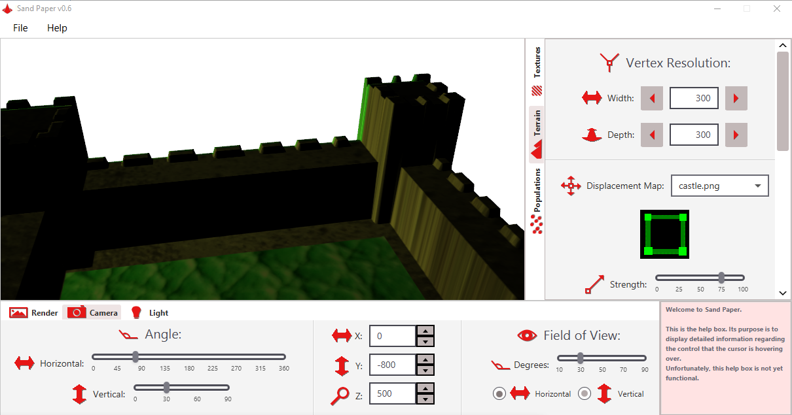

GEORGE
TIERSMA

Software Developer - Digital Artist
Software Developer - Digital Artist
ABOUT ME
I am a recent college graduate who has been educated in computer programming and graphic design. I am currently seeking a junior software development career, but I am also open to junior-level web development, database and graphic design career opportunities.
While holding a part-time retail position, I have been diligently developing this website as well as an application known as Sand Paper, which has been a major endeavor. I began looking for work in Summer of 2020, after the repositories for these projects were made public.
I am very accommodated with independent work, but also very cooperative in teamwork. In the workplace, I put the business's needs above my own. I will help however I can to the best of my ability.
PROJECTS
-
Computer Programming
Sand Paper
Sand Paper is a 3D modeling software solution for graphic designers that have limited knowledge with 3D modeling. Users create images that Sand Paper uses to construct three-dimensional scenery. Users then create rendered images of the scenery to further use in their image-editing projects.
Sand Paper is designed to function as a companion application that is used in collaboration with an image editor of the user's choice. The 3D object(s) that Sand Paper creates are constructed entirely with 2D images.
It is programmed in Java with the help of the JavaFX platform.
Stayton Animal Supply Excel Inventory Management System
While working at Stayton Animal Supply, I was given the opportunity to design an inventory management system for the business to use.
Programmed as a Visual Basic macro, it provided the basic necessities for managing products, such as creating, deleting, editing and searching for items. It was successfully used to calculate the business's product inventory at the end of the fiscal year. It was used for 1-2 months. Management was satisfied with the inventory system, however, it was decided to deprecate the project due to various technical limitations of the small business.
The code is not available online, however I have been given permission to present it in person if requested.
-
Graphic Design
History's Role for the Future

I designed these two images to be used as a pair to communicate an philosophical idea. They are set in a library during the early Renaissance period. Notice that there are anachronistic photos hanging on the wall. Also notice the contrasting atmosphere between them.
What is being communicated is how education changes society through time. The top image displays an armored woman studying a book and a good future being shown on the wall. The bottom image visualizes the absence of a subject studying, but a presence of a threatening future on the wall.
Created in Photoshop, they are composed of dozens of separate layers of content, including many layers used for lighting and color adjustments. The photos in the background were provided by the Library of Congress. The subject's face was created in Daz 3D, while the hair was painted directly in Photoshop. All other elements were created from photos I personally shot.
Nature Rules

A personal recreation of a composition titled "Nature Rules", this image was originally created by the instructor of my college's Photo Illustration class, Bret Malley. He supplied the artwork's source photography, which consisted of a basic photo of a city, a field, a mountain and a sky. I then completed the remaining work with Photoshop.
A guide to follow was given, however I did quite a bit of work outside of the guide to enhance the shading, lighting and color.
-
Database Development
Bicycle Rental Business ER Diagram
This was created as part of a project in my Database Management class in college. I worked in a group with two other individuals to develop a database system for a fictional bicycle rental business. Our group name was the Cyber Centurions.
The diagram was not directly designed by me, however I played a big part in discussing how the data should be organized to normalize the business's technical capabilities.
My team decided that I should be tasked with the creation of the SQL Data-Definition script of this diagram. It was used to automatically create the database's tables within Microsoft Access.
Bicycle Rental Business Access Database
This was created as part of a project in my Database Management class in college. I worked in a group with two other individuals to develop a database system for a fictional bicycle rental business. Our group name was the Cyber Centurions.
The database was implemented in Microsoft Access, complete with forms for users to input data, as well as reports that could be automatically generated.
It was my job to implement the database into Access. Me and my teammates had a tight deadline to complete it, so it was created in a rush, but I made certain that it had all of the necessities and was operational.
-
Computer Programming
-
Graphic Design
-
Database Development
TECHNICAL SKILLS
-
Graphic Design
Familiar with using Adobe Photoshop and Gimp
Knows how to create UI graphics and controls
Knowledgeable with photo enhancing and editing
Practices non-destructive image design
Self-taught in typography and logo design
-
Computer Programming
Familiar with Java, JavaScript, Python and Visual Basic
Understands object-oriented concepts such as inheritance and polymorphism
Usually fast with learning and researching topics relating to programming
Has programmed with multiple threads
Strong with mental mathematics
Heavily relies on Google for remembering programming syntax
-
Web Development
Familiar with CSS and JavaScript
Familiar with markup languages, such as HTML, XML and SVG
Familiar with the jQuery library
Understands the importance of progressive enhancement, responsive web design and accessibility
Uses HTML for the website's structure, CSS for its design and Javascript when functional code is necessary
Heavily relies on Google for remembering JavaScript syntax
-
Database Development
Knows how to read and create some forms of ER Diagrams
Familiar with SQL
Familiar with Microsoft Access
Has worked in a group to create a database
-
Computer Hardware
Has successfully built a PC
Can diagnose many hardware-related issues (may need Google)
SOFT SKILLS
-
Teamwork
When working in a team, I always make sure that my share of the workload gets done. Whenever a team member needs assistance and I am available to help, I take action to help. I do not give into frustration if faced with a conflicting opinion. Instead, I would try hard to reach an agreement, even if it is not mutual. I understand the importance of avoiding such situations.
-
Written Communication
When writing (or typing), I make a habit of double-checking the simplicity and professionalism of everything I write. When writing instructions, I often use numbered steps to communicate the process. I do not skip any steps or information, no matter how obvious it may seem. When programming, I document and explain any code that has even a slight possibility of being misunderstood by any skilled programmer.
-
Perseverance
Whenever I am given a task, I do not give up easily, even if it is work that I do not enjoy. If I am unsure of situation, I resort to Google. If I cannot find my answer there, I will seek assistance of a more experienced individual. If it ever becomes apparent that a solution does not exist or that it is not worth the time required, I then devise an alternative solution.
-
Organization
Whether it is code and files on my computer or physical papers and documents, I organize my work where I can remember it or find it easily. I understand that losing work can at times cost needless hours of additional labor.
-
Troubleshooting
If a computer is not working as it should, I can usually discover a solution for it rather quickly. When working at Stayton Animal Supply, if a computer was malfunctioning, I was often the employee assigned to remedy it. I also commonly troubleshoot technology issues that occur within my household.